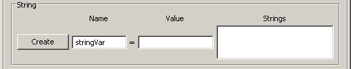

The objective of this tutorial is to demonstrate how to report parameters out to a file using two different reporting techniques, as well as how to use strings to improve the readability of a report file.
Download the script file: ReportFile.script
Objects modified (use if you have trouble with this tutorial):
Commands modified (use if you have trouble with this tutorial):
Objective: Use the Report Object to output parameters to an ascii file
Assume: N/A
Find: N/A

Plots/Reports:
ReportFile - AutoReport, ManualReport, DecoratedReport
Variables/Arrays/Strings:
String Variable - StringVar
The ReportFile has two features that both allow a user to output data to an ASCII text file. One feature of a ReportFile is to output data at every integrator step and the other is to output data at the user's discretion using Report commands in the Mission Sequence.
Right click on the Plots/Reports folder and add a ReportFile.
Add two more ReportFiles for a total of three ReportFiles.
Rename the three ReportFiles by right clicking the ReportFile and selecting Rename. The new ReportFile names are as followed: AutoReport, ManualReport, and DecoratedReport.
Verify that your Plots/Reports Resource Tree settings are identical to the image below.
 |
Figure: Plots/Reports Resource Tree Folder
The AutoReport ReportFile is used to report data every integrator step size once the mission is run.
Open the properties panel of the AutoReport ReportFile and remove all parameters in the Selected input field by clicking the Remove All button.
Add the following parameters to the Selected input field in the order specified: DefaultSC.UTCGregorian, DefaultSC.EarthMJ2000Eq.X, DefaultSC.EarthMJ2000Eq.Y, DefaultSC.EarthMJ2000Eq.Z, DefaultSC.EarthMJ2000Eq.VX, DefaultSC.EarthMJ2000Eq.VY, DefaultSC.EarthMJ2000Eq.VZ
Change the File input field to ./output/AutoReport.txt .
Verify that your settings are identical to the image below.
Figure: AutoReport ReportFile Settings
Open the properties panel of the ManualReport ReportFile
Remove all parameters in the Selected input field by clicking the Remove All button.
Change the File input field to ./output/ManualReport.txt .
Verify that your settings are identical to the image below.
 |
Figure: ManualReport ReportFile Settings
The DecoratedReport ReportFile is identical to AutoReport ReportFile, besides the file path of the report.
Open the properties panel of the DecoratedReport ReportFile
Remove all parameters in the Selected input field by clicking the Remove All button.
Add the following parameters to the Selected input field in the order specified: DefaultSC.UTCGregorian, DefaultSC.EarthMJ2000Eq.X, DefaultSC.EarthMJ2000Eq.Y, DefaultSC.EarthMJ2000Eq.Z, DefaultSC.EarthMJ2000Eq.VX, DefaultSC.EarthMJ2000Eq.VY, DefaultSC.EarthMJ2000Eq.VZ
Change the File input field to ./output/DecoratedReport.txt .
Right click the Variables/Arrays folder and select Add --> String.
Navigate to the String group box and enter a string Name of stringVar.
Leave the Value input field blank.
Click the Create button and click OK to exit out of that panel.
Verify that your settings are identical to the image below.
|  |
Figure: String Variable Creation
Select the Mission tab in the left pane to switch over to the Mission Sequence tree.
Right click on the Propagate1 command object and Insert After a ScriptEvent.
Right click on the newly created ScriptEvent(BeginScript) and Insert After a Propagate.
Verify that your settings are identical to the image below.
(Folder icons and command numbers may not be the same)
 |
Figure: Mission Tree Configuration 1
For the ManualReport ReportFile, we will add a Report command before and after the entire mission sequence to see what the initial state and final state is.
Right click the first Propagate command and Insert Before a Report command.
Add the same parameters as the (Configure AutoReport ReportFile):
DefaultSC.UTCGregorian, DefaultSC.EarthMJ2000Eq.X, DefaultSC.EarthMJ2000Eq.Y, DefaultSC.EarthMJ2000Eq.Z, DefaultSC.EarthMJ2000Eq.VX, DefaultSC.EarthMJ2000Eq.VY, DefaultSC.EarthMJ2000Eq.VZ
Select the ManualReport ReportFile before closing the Report command properties panel.
Right click the last Propagate command and Insert After a Report command.
Add the same parameters as above and select ManualReport for the ReportFile.
Verify that your settings are identical to the image below.
(Folder icons and command numbers may not be the same)
 |
Figure: Mission Tree Configuration 2
Right click the first Propagate command and Insert Before a ScriptEvent command.
Open the properties panel for the first ScriptEvent
Enter the following between the BeginScript/EndScript text and click OK to exit the panel:
GMAT DecoratedReport.WriteHeaders = Off; stringVar = '=================================================='; Report DecoratedReport stringVar; stringVar = GMAT Report File in Time X Y Z VX VY VZ format; Report DecoratedReport stringVar; stringVar = '=================================================='; Report DecoratedReport stringVar; GMAT DecoratedReport.WriteHeaders = On;
Observe how WriteHeaders was turned off while outputting string data. If you don't do this, you will get the word stringVar showing up above each report output line.
Verify that your settings are identical to the image below.
(Folder icons and command numbers may not be the same)
Figure: Mission Tree Configuration 3
This concludes the configuration of the commands needed for the Mission Sequence.
Run the mission and navigate to the Output Tab.
Open the AutoReport file. The contents are a heading and data associated with the parameters in the heading at each propagator integration step.
The AutoReport output should look like the image below.
Figure: AutoReport Output Results
Open the ManualReport file. The contents are a heading followed by the initial spacecraft state, a heading, and the final spacecraft state.
The ManualReport output should look like the image below.
 |
Figure: ManualReport Output Results
Open the DecoratedReport file. The contents are the custom heading using string variables, followed by the default heading, and data associated with the parameters in the default heading at each propagator integration step.
The DecoratedReport output should look like the image below.
 |
Figure: DecoratedReport Output Results